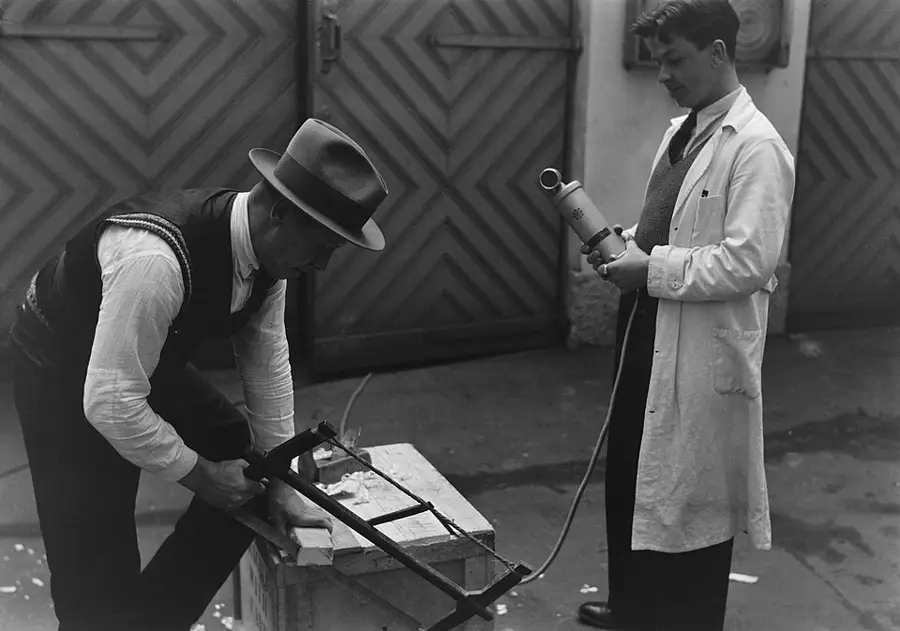

Foley Radio Play, Recorded Live
A scripted radio drama performed entire on a rainy day: actors at the microphone, live sound effects made by hand at the Foley table, one take per scene.
Ages 13–1450–60 min4 materials
- Ages
- 13–14
- Group
- 6–24 kids
- Time
- 50–60 min
- Where
- Indoors
- Prep
- Some prep needed

Setup
Read the whole play aloud yourself before the session, with a pencil, and mark it like a studio manager: every line's speaker, every effect the script implies, and every place the audience will need a sound the words cannot give them, a door, weather, a journey. Build the Foley table from that marked script and no other list, and test every effect at the volume the recorder will hear: an effect that sounds magnificent across a room may arrive at the microphone as a thud, and the table is tuned at rehearsal distance, not performance distance. Cast on the session's own evidence as the framing will promise, voices tried in the warm-up, parts given where they sit well, and the play's small parts cast with the same ceremony as its leads, because a radio play has no small sounds. Set the studio before the cast enters: microphone at the centre with its distances taped on the floor, near mark for whispers, far mark for shouting rooms, actors' chairs in an arc the director can see entire, the Foley table within the director's sightline and out of the actors' way, and the rain outside, which booked the session, acknowledged as the studio's first effect and the only one nobody has to make.
Materials
- a short play the room can perform entire (an original script written by the group in an earlier session, or a classic short drama the adult has chosen and read entire in advance. Fifteen minutes of playing time is the honest size; every part cast, every scene's effects listed on its cue sheet)
- the Foley table (the studio's instrument bench: gravel tray for footsteps, coconut shells or cups for hooves, a sheet of metal or a baking tray for thunder, water basin and jug, keys, doors in miniature, a hinged board with a latch, celery or lettuce for the sounds nobody asks about twice; every effect tested for its sound before the session)
- one recorder at the room's centre, adult-run (a phone or recorder on a stand, set before the cast arrives. The studio's only machine, and its operator's whole job; levels checked on a rehearsal line, never during a take)
- cue sheets and the studio log (one sheet per scene: who speaks, who effects, in what order, and the log where takes, retakes and their reasons are entered, scene by scene, by the studio's keeper)
Steps
- The framing, cast in their arc, Foley table laid like an instrument: 'The audience believes its ears; the studio's job is to deserve that. A radio play has no faces, no costumes, no weather but what we make. Every listener will build the whole world from our voices and the sounds this table honestly produces. So the studio's laws are a listener's laws: an effect is made at the moment it happens in the story, never early to get it over with and never late as an apology; an actor who dries does not stop the scene. The director's raised hand holds the room, the prompter gives the line's first words, and the take rolls on, because a pause can be believed and a panic cannot. We record scene by scene, one full take and at most one retake, and the retake is granted for a reason the log can state, a missed cue, a dried scene, the rain drumming through the best line, never for a vague wish to be better, because a studio that chases perfect takes will still be chasing when the bell goes. What we keep is what a listener will believe. That is the standard, and it is high enough.' The cast warms its voices on the play's own first lines, each actor finding their distance from the microphone, and the Foley crew runs the table's roll-call, every effect named and sounded once, in cue order, for the director's ear.
- Scene takes, the studio at work: the director calls the scene, the keeper reads its cue sheet aloud, speakers, effects, order, the recorder's operator shows the running hand, and the take begins on the director's single word. Actors play to the microphone's marks, near for the confidences, far for the doorways, and the Foley crew makes the scene's world at the exact beats the script has set them: footsteps that walk at the actor's own pace and stop when the actor stops, a door that opens when the line says it opens, weather that starts under the line that names it and no sooner. The director watches the cue sheet, not the performers, a director watching faces misses cues, and holds the room through trouble with the framing's raised hand, giving a dried actor to the prompter and a missed effect its second chance at the scene's next natural beat, because a take is a living thing and the studio's skill is keeping it alive, not stopping it dead at every flaw.
- The retake law, applied in the open at each scene's end: the director states the take's verdict first, keep, or retake and why, in one sentence the keeper can write, and the cast hears the reasoning before they hear the verdict's effect on their work. A retake reruns the whole scene, never a patched line, because radio time is continuous and a spliced performance sounds like what it is; the second take is the scene's last, whatever it holds, and the keeper enters both takes' fates in the log with their reasons side by side. Between scenes the studio resets in its drilled order, Foley table checked against the next cue sheet, actors reseated, distances re-taped where feet have wandered, while the keeper reads the log back to the room, so the company always knows what it holds: so many scenes banked, so many to go, and the rain, if it is still performing outside, credited in the log as an uncredited guest.
- The playback, the studio hearing itself as its audience will: when the last scene is banked, the room changes shape, chairs turned, the recorder at the front, the company seated as listeners, in silence, for the whole play played entire without a pause for pride or apology. Listening is the cast's final craft and it is taught as plainly as the rest: attend to what a stranger would believe. Could you follow who was where? Did the door sound like a door? Where did your own attention wander, and what was the play doing at exactly that moment? The keeper takes the company's notes at the playback's end, one per member, spoken or written, and enters them on the log's listening page without editing their disagreements, because a company that argues honestly about what its audience will believe is a studio learning its trade.
- Closing the studio, the play is named and filed: its title, cast, Foley crew, director and date are read into the recorder as the play's own opening credit, in the company's best ceremonial voice, and the log's closing page is written together. Takes kept, retakes spent and their reasons, the effect the table was proudest of, the scene the playback proved. The tell-back is said with the Foley table still laid, before it is packed: 'This morning this was a script, a table of gravel and shells, and a room the rain had kept indoors. It is a play now, because actors held their marks, effects arrived at their moments, a director held the room without stopping it, and the log can show every decision we made and why. A listener who was never in this room will believe a world we built out of voices and honest noise. That is the studio's whole magic, and it is a trade, and today we practised it entire.' The Foley table is packed by its crew, every item checked against the cue sheets it served, and the play's file and log are stored together where the next rainy day will find a studio ready to reopen.
Variations
Easier: A one-scene version (a single wet lunchtime): one short scene with three effects, cast, cued, taken twice at most and played back entire, the whole studio in miniature, laws intact, because the laws are the studio.
Harder: A serial version (a term of rainy days): the company records one episode per wet session, the log carrying cast and cues between episodes, and the season is played entire at the term's end, a studio with a memory, and an audience of itself, growing pickier by the episode.
⚠️ Safety
The studio's hazards are ordinary room hazards made theatrical, and they are governed plainly: the Foley table's water lives in its basin on a tray, away from the recorder and its cables entirely, water and the studio's one machine never share a surface, and spills are mopped by the crew at the scene break, because a wet studio floor at microphone distances is a fall rehearsing itself. Cables run taped along the floor's edges, never across the actors' arc; distances are taped, chairs are set once and not drifted, and nobody crosses the studio during a take except at the director's signal, because a room performing blindness for its listeners must be able to trust its own floor. Effects are made with the table's listed items only. No glass is broken for any sound, ever, for any scene; the thunder sheet is lifted by its edges by two hands, gravel stays in its tray, and anything a script seems to demand beyond the table's honest means is re-imagined at rehearsal, which is the Foley's oldest professional pleasure. Volume is the adult's care: shouting marks are set at the floor's far tape for a reason, playback runs at a kind level, and a company that has spent an hour at performance effort takes its closing standing, stretching and talking quietly, because voices and ears both tire and the studio respects its instruments.
🤝 Inclusion notes
A radio studio is the most naturally open room in this whole archive, because its audience will never see it: casting is by voice and by wish, tried in the warm-up and settled where parts sit well, and a performer may act seated, standing, at the near mark or the far one, with their lines on a stand, in large print, or held by the prompter as a matter of the studio's ordinary furniture. The Foley table is a row of skilled, mostly seated crafts. Footsteps in gravel can be worked by hands as surely as by feet, the thunder sheet is a two-person lift shared as agreed, and the table's chief, who cues every effect from the sheet, holds the studio's timing in their hands from a chair at its centre. Directing, prompting and log-keeping are full studio offices: the director's authority is voice and gesture, the prompter's feed is the take's lifeline, and the keeper's log is the company's memory. All three can be held by members who never step to the microphone, at the session's full standing. Cue sheets are read aloud before every scene as law, signals are given in sight as well as sound, and the playback is heard together with the company's notes taken spoken, written or dictated, a studio that believes its ears extends the same courtesy to its own.
⭐ Tried this? Rate it
Your ratings live in this browser only. Nobody else can see them. There are no community ratings here; every star on this card is yours.
Rate this activity, add a note, or write a reflection
✏️ Quick reflection
Optional, saved with your rating, and exported with "📋 Copy my week".
Full activity card,